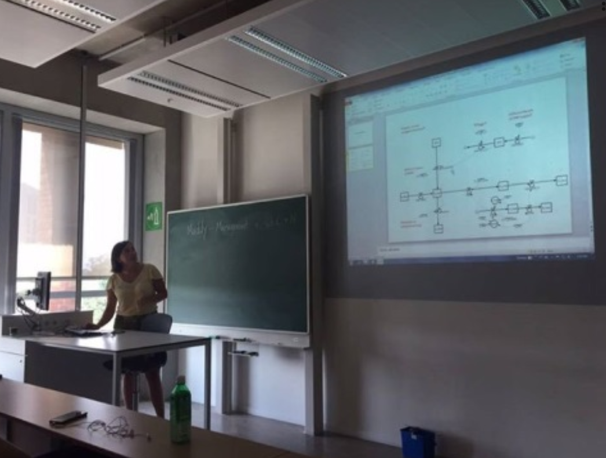
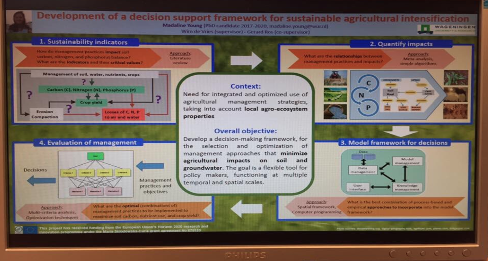
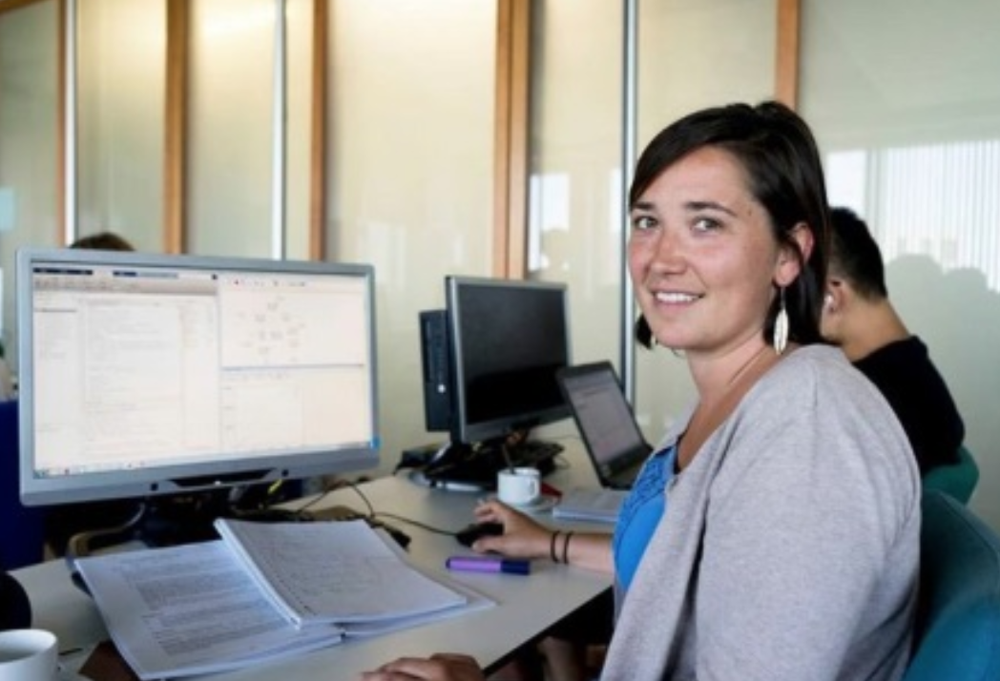

Presentations
Meeting of professionals from diverse water-related subjects
23/04/17 - 28/04/17. Wijk aan Zee, Netherlands. Maximilian Ramgraber.
Stakeholders:
Scientists, students, facilitators, engineers
Presented project vision to diverse, largely science-unrelated professionals. More information can be found
here.
SENSE presentation at graduate school symposium "Environmental Research in Context"
29/03/2017 - 31/03/2017. Apeldoorn, NL. Maddy.
Stakeholders:
Scientists, PhD researchers

Introduction of ESR and Research Project at symposium, including a poster presentation, pitch and competition. More information can be found here
here and
here.

Winner of a "pitch" competition for a modelling course, resulting in the recruitment of other PhD researchers to work on the ESR modelling project for 1 day
12/06/2017 - 23/06/2017. Wageningen, NL. Maddy.
Stakeholders:
Professors, scientists, PhD researchers
Introduction of modelling component of Research Project and success in effectively pitching this idea to a group of scientists. More information can be found
here and
here.

Visit long-term experimental station
26/10/2017 - 26/10/2017. WUR Applied Arable and Vegetable Research, Lelystad, NL. Maddy.
Stakeholders:Scientists, advisory people
Introduction of ESR and Project at Applied Arable and Vegetable Research, collaboration on the use of long-term experimental data